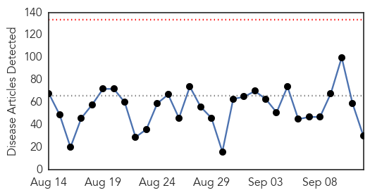
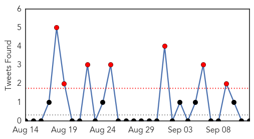
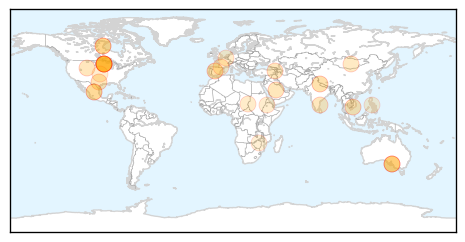
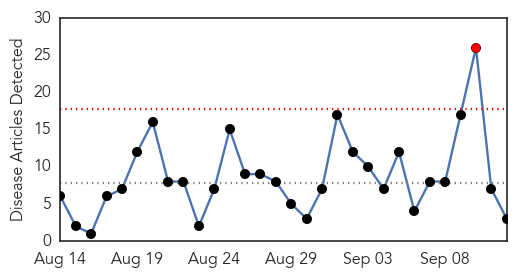
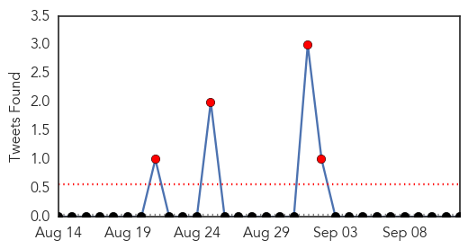
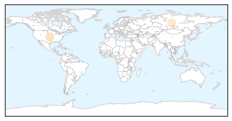

Unknown
30-Day Web Trend
0 alerts, 0 warnings

30-Day Twitter Trend
7 alerts, 0 warnings

Article Locations
Article Confidences
Top Articles:
- 0.998
- Deadly MERS virus reported in Spain -
- 0.961
- Where water kills- Nepali Times
- 0.923
- Hand, foot and mouth disease spirals in Ho Chi Minh City
- 0.902
- China Confirms Bird Flu Death
- 0.899
- 45 sick: Health officials investigating Salmonella cases linked to Chipotle restaurants in Minnesota
- 0.897
- Chipotle Linked Salmonella Outbreak Sickens 45 People In Minnesota
- 0.862
- State too should pay heed
- 0.860
- High Rate of Texas Bugs May Transmit Chagas disease
- 0.847
- 45 Sickened In Minnesota After Recent Chipotle Restaurants Salmonella Outbreak
- 0.796
- MERS Virus: Camels banned for slaughtering during Hajj in Saudi Arabia
- 0.779
- Tuberculosis Evolving Epidemic
- 0.777
- New Strain of Salmonella Linked To Eating At Chipotle Restaurants in Minnesota
- 0.773
- Health officials puzzled by surge in rare bacterial disease known as rabbit fever -- Health & Wellness -- Sott.net
- 0.772
- Ministry Points to Water as Source of Dysentery Outbreak in Tzithankov
- 0.717
- Salmonella outbreak at SA hospital
- 0.710
- Seven in Nevada sickened in salmonella outbreak
- 0.701
- Restrictions at TADH due to bacteria strain
- 0.698
- Male Yeast Infection Treatment Webmd Medical Reference
- 0.670
- Salmonella outbreak at SA hospital
- 0.655
- 45 Cases of Salmonella Tied to Chipotle Restaurants
- 0.650
- Salmonella outbreak at SA hospital
- 0.644
- France to vaccinate livestock following bluetongue outbreak
- 0.634
- Vibrio outbreak: More V. parahaemolyticus cases reported in BC, Saskatchewan
- 0.622
- Darfur: UN humanitarian officials deplore fatal attack on health workers
- 0.621
- Incidence of Lyme Borreliosis in Belgium, 2003-2012.
- 0.586
- Minnesota salmonella outbreak tied to Chipotle locations
- 0.572
- HIV/Aids complicates fight against kala azar
- 0.566
- Alzheimer's Disease: Transmissible, Preliminary Studies Revealed
- 0.520
- Torture, rape, disappearances 'rampant' in Zimbabwe
- 0.515
- “Walk for Rina” raises local awareness regarding Lupus disease
Top Tweets:
- 0.749
- RT: En un hotel barato se verá la luz de un neón intermitente por la ventana. axiomasDelCine
- 0.749
- RT: El coche de policía está oculto tras un cartel gigante en las carreteras desérticas. axiomasDelCine
- 0.745
- RT: No hay manera de que acaben todos en la cena de acción de gracias. Siempre se larga alguien axiomasDelCine
- 0.740
- axiomasdelCine persecuciones en plena ciudad a toda velocidad,tumban el puesto de frutas y ni un solo policía aparece
- 0.738
- Ay Dios,persona en momento de enfermedad se conoce
- 0.677
- RT: En las persecuciones siempre vuelcan un puesto de frutas callejero. axiomasdelCine
- 0.673
- RT: La cena en casa consta de: guisantes, puré de patatas y chuletas de cerdo axiomasdelcine
- 0.651
- RT: En la casa de un narcotraficante, siempre hay cuatro latinos jugando a las cartas axiomasdelCine
- 0.634
- La mesa de un milenio,pero tremendo ambiente
- 0.622
- RT: "Coño, lo que tarda este aceite en calentarse" dijo ella, media hora después de NO haber encendido el fuego.
- 0.575
- RT: Van al instituto en su propio coche; si además son los cretinos de la peli, en descapotable axiomasDelCine
- 0.569
- RT: axiomasDelCine En las películas de terror cuando se va la luz sólo queda un fluorescente y parpadea.
- 0.568
- RT: axiomasDelCine En las peliculas de terror siempre se va la luz en algún momento.
- 0.558
- RT: axiomasdelCine Los agentes de la CIA siempre viajan en 4 coches negros idénticos y sin guardar la distancia de seguridad.
- 0.554
- RT: Los mafiosos siempre se reúnen en el muelle al lado de los contenedores de carga axiomasDelCine
- 0.543
- RT: Las bandas son todas organizadas, siempre atacan de uno en uno y de peor a mejor. axiomasDelCine
- 0.523
- RT: Si te lavas la cara en el lavabo, el asesino aparecerá a tu espalda la segunda vez que mires en el espejo. axiomasdelcine
- 0.512
- RT: axiomasDelCine los malos van en un sedan oscuro
- 0.511
- RT: axiomasDelCine En cualquier lugar: "solía venir aquí de niña"
Influenza
30-Day Web Trend
1 alerts, 0 warnings

30-Day Twitter Trend
4 alerts, 0 warnings

Article Locations
Article Confidences

Top Articles:
Top Tweets:
-
No tweets found for Sep 12, 2015